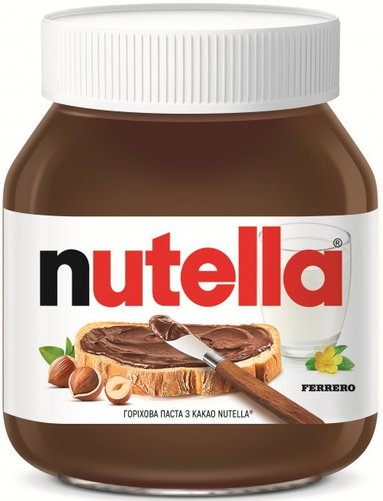

| № | Фото | Описание | Цена |
|---|---|---|---|
| 1 |  | Nutella- зарегистрированный товарный знак джандуйи — пьемонтской шоколадной пасты, или сладкого спреда с лесными орехами, какао и молоком. Выпускается итальянской компанией Ferrero S.p.A. с 1964 года. |
1000$ |
| 2 | M&M’s -шоколадное драже, выпускаемое фирмой Mars LLC. Впервые появилось в США в 1941 году и сейчас продаётся более чем в 100 странах. Название M&M’s расшифровывается как «Марс и Мьюрри» — по фамилиям двух основателей компании. M&M’s представляют собой разноцветное драже, на каждом из которых напечатана буква «M». |
700$ |
|
| 3 | 
| Snickers- марка шоколадных батончиков с жареным арахисом (также с семечками, фундуком, миндалём), карамелью и нугой, покрытых сверху молочным шоколадом. Продажи Snickers в 2005 году по всему миру ежегодно составляли около 2 миллиардов долларов. В Великобритании, на Острове Мэн и в Ирландии до 1990 года продукт продавался под названием Marathon. Позже этот батончик стал продаваться по всему миру под названием Snickers. Популярен в странах бывшего социалистического лагеря. |
500$ |
| 4 | Sprite- The Coca-Cola Company впервые выпустила Sprite в октябре 1961 года в Германии. Первыми, кто попробовал этот напиток, были жители штата Джорджия (США). Он был создан как конкурент 7Up компании PepsiCo. Sprite получил своё название от популярного в 1940-е годы эльфа с серебряными волосами, который полюбился аудитории по рекламной кампании Coca-Cola. Его звали Малыш Спрайт, он всегда широко улыбался и вместо шляпы носил на голове пробку от напитка. В 1994 году был создан новый логотип Sprite и самый популярный слоган, который стал прочно ассоциироваться со Sprite: «Имидж — ничто, жажда — всё!». |
2000$ |
|
| 5 | Twix- шоколадный батончик, песочное печенье с карамелью, покрытое слоем молочного шоколада, производимый американской компанией Mars Incorporated с 1967 года. Упаковка Twix обычно состоит из двух батончиков. |
800$ |
|
| 6 | Bounty конфета с мякотью кокоса, покрытая молочным шоколадом, выпускаемая американской компанией Mars в странах Европы, Океании и Ближнего Востока. Выпускается в двух видах — с молочным и тёмным шоколадом. С молочным шоколадом батончик имеет голубую упаковку, с тёмным — красно-коричневую. С 2007 года батончики с тёмным шоколадом перестали продаваться на постсоветском пространстве, однако в 2011 году вновь появились в продаже. Есть разновидности со вкусом манго и ананаса, а также «Bounty Trio» — увеличенная, по сравнению со стандартной, упаковка — с тремя конфетами. |
1200$ |
|
| 7 | 
| Mojito- коктейль на основе светлого рома и листьев мяты. Происходит с острова Куба, стал популярен в США в 1980-х. Коктейль входит в список «современной классики» международной ассоциации барменов (IBA) и классифицируется как лонг дринк. |
100000$ |
Цены Ниже Рыночных,Правда же?
Притензии сюда: